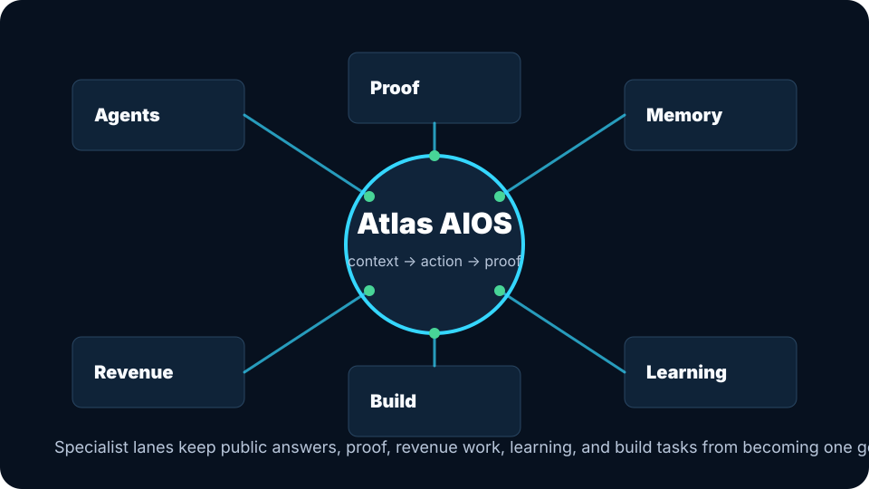

Ask
A visitor names the leak or goal in plain language.
The public offers stay simple because the operating layer underneath is structured: agents, memory, proof, long-horizon tasks, system cards, capability cards, and daily loops.

Atlas turns a public question into a small, proof-backed path instead of dumping every internal status file on the visitor.
A visitor names the leak or goal in plain language.
Atlas checks website clarity, contact path, follow-up story, proof trail, and offer fit.
Atlas chooses the smallest public offer that can move the work forward.
Work stays tied to proof, intake, payment evidence, and delivery boundaries.
AtlasOps can explain offers, route public questions, produce proof-backed recommendations, and keep external action claims gated. It does not claim unavailable capabilities are production-ready.